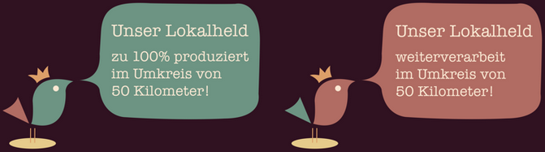

Unser Lokalheld kennzeichnet Produkte, die entweder zu 100 Prozent im Umkreis von 50km produziert, oder hier weiterverarbeitet wurden. Unser Anliegen ist es, diese für Euch sichtbar zu machen und der Vielfalt regionaler Produkte und deren Produzenten ein Gesicht zu geben.
Mit dem Unser Lokalheld Siegel kennzeichnen wir die lokalen Produkte.

Unser Lokalheld Produkte findet ihr während eures Einkaufs überall im Laden. So merkt Ihr schnell wie lokal man tatsächlich einkaufen kann.
Achtet einfach auf das Unser Lokalheld Siegel auf Produkten aus den Bereichen:
Obst & Gemüse, Mehl, Nudeln, Milch/Käse & Eier, Getränke, Wurst- und Fleischwaren, Marmelade...
Wenn auch ihr in eurem Laden Unser Lokalheld Produkte mit dem Siegel kennzeichnen wollt, oder ihr ein Produzent seid der eine spannende Geschichte zu erzählen hat, oder aber ihr einfach Fragen zu Unser Lokalheld habt dann könnt ihr uns gerne kontaktieren.